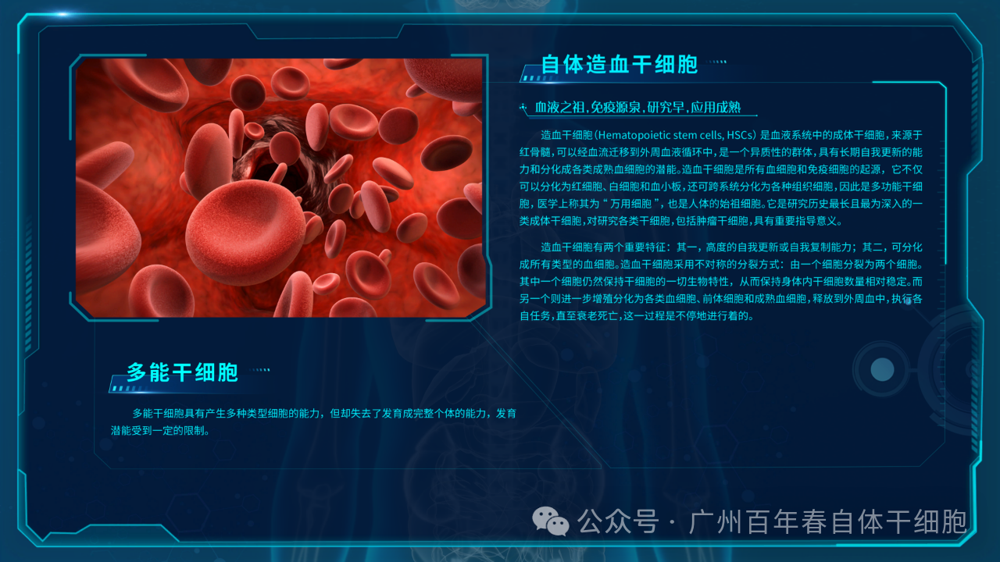
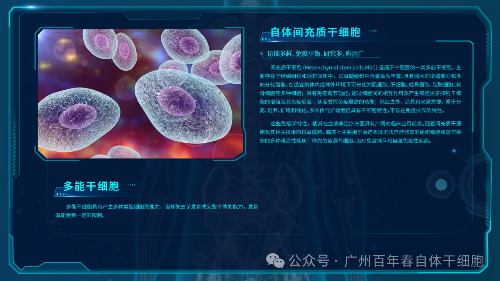
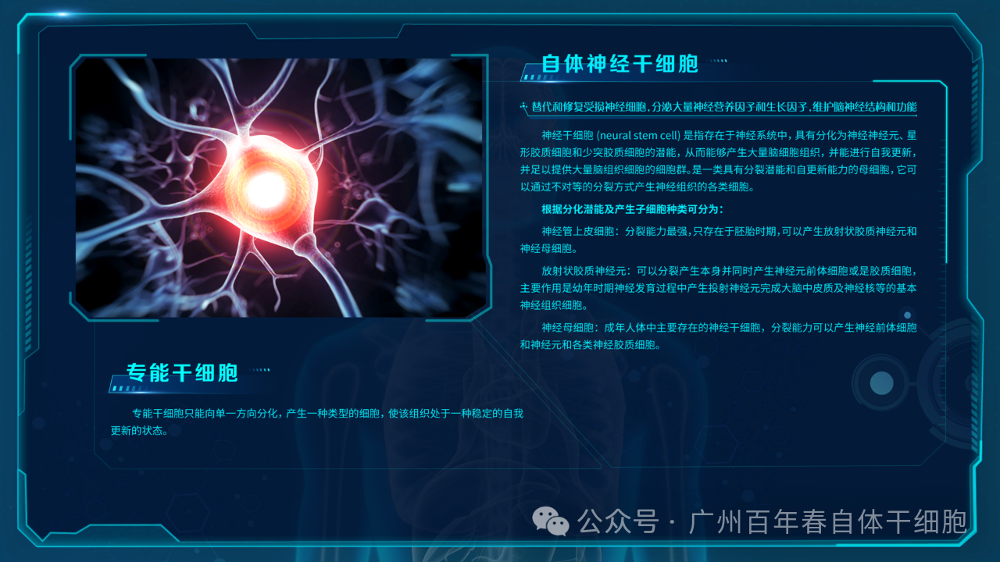
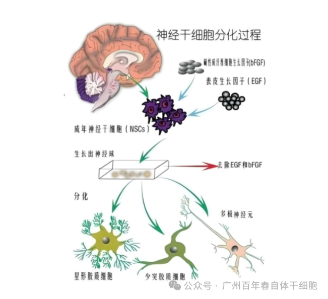
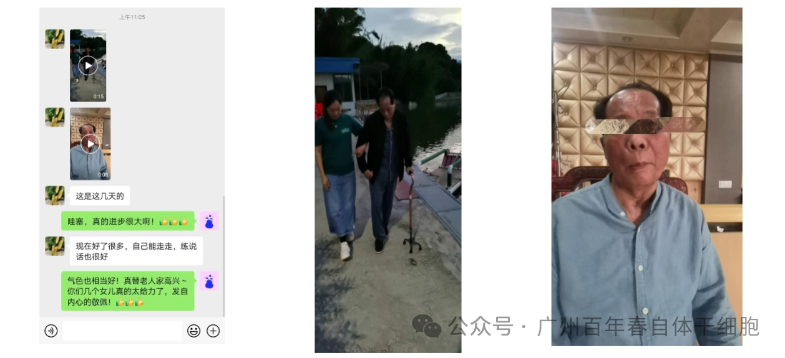
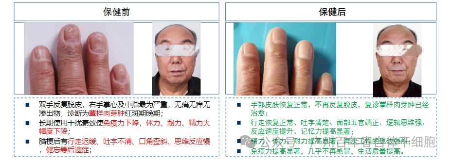

别等身体亮红灯！百年春自体干细胞，为您定制细胞级抗衰防线
2026-03-04

About Us
关于百年春
百年春自体干细胞通过提取客户血液中的白细胞个性化定制：自体造血干细胞、自体间充质干细胞和自体神经干细胞，经过静脉、腰穿及蛛网膜下腔回输等方法将自体干细胞回输体内，针对帕金森、脑梗死等大脑神经系统损伤进行修复和保健。




案例1：韩先生被诊断为帕金森、重度脑梗死。长期需要坐轮椅出行，日常只能躺着，起立等日常动作都需要靠家人扶着，语言功能也严重收到影响。通过2针自体神经干细胞（单次自体干细胞剂量2-3亿+100UI外泌体）保健。
保健后：帕金森手抖状况逐渐好转，肢体功能慢慢恢复，可以拄拐杖下床散步，语言能力也逐渐恢复，生活质量大幅提高。


△ 以上是案例2保健前后对比
此外自体间充质干细胞的研究和应用为脑损伤治疗带来了新的希望。
检索Cochrane Library,Pub Med,Ovid,CBM,CNKI,Wan Fang,VIP数据库,目前关于间充质干细胞移植改善脑梗死预后的临床随机对照试验,其中间充质干细胞移植组单独进行间充质干细胞移植、间充质干细胞移植联合常规药物治疗和/或康复训练,对照组进行常规药物治疗或常规药物治疗联合康复训练已进行了多项临床试验，累计患者626人。
结果与结论:
①共纳入10个随机对照试验,合计626例脑梗死患者;
②结果显示间充质干细胞移植组治疗3个月后的日常生活能力(Barthel指数评分)[MD=20.06,95%CI(9.95,30.18),P=0.000 1]、运动功能(Fugl-Meyer评定表评分)[MD=14.60,95%CI(12.96,16.25),P<0.000 01]、个体残疾状态(FIM评分)[MD=15.16,95%CI(9.06,21.26),P<0.000 01]及神经功能缺损程度(NIHSS评分)[MD=-2.59,95%CI(-3.14,-2.05),P<0.000 01]均优于对照组,且差异均有显著性意义;
③共有4项研究报道患者出现低热及轻微头痛,1项研究报道患者出现腰部酸痛,但未经治疗或经对症治疗后症状均可迅速消失;